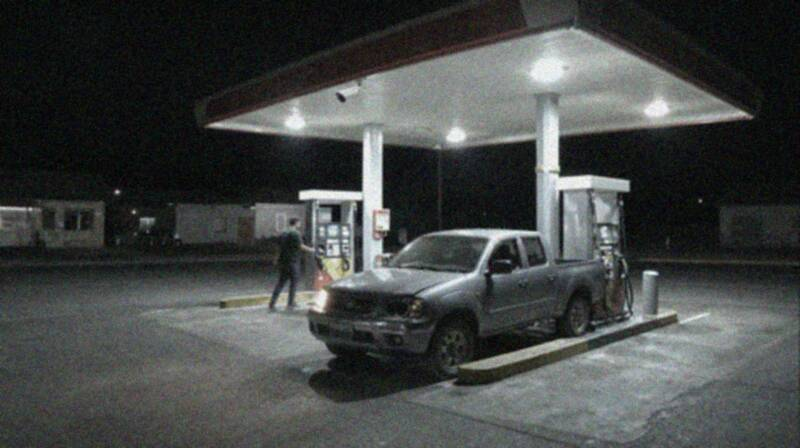
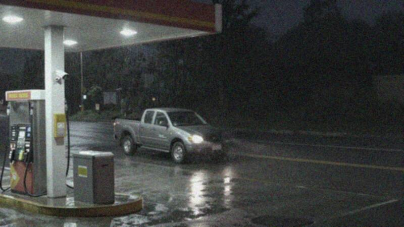

Copec Labranza · Cámara de la pistaAportada por el encargado de la estación
E28Cámara del Copec, viernes 30-10
El Copec está en el cruce donde el camino al sector poniente sale de Labranza centro. Todo vehículo que va desde Temuco o desde el centro hacia el Camino Los Copihues o las villas del poniente, o que vuelve, pasa frente a la cámara. Se revisó la franja de 19:30 a 00:00. La cámara apunta a la pista y a la ruta: los peatones y las bicicletas no quedan registrados con claridad.

CAM 02 · PISTA30-10-2026 22:50:31
CAM 04 · SALIDA30-10-2026 23:41:07| Hora | Lo que se ve |
|---|---|
| 19:55 | SUV blanca de la víctima, hacia el Camino Los Copihues. |
| 20:55 | Colectivo de la línea Labranza–Temuco, hacia el poniente. |
| 21:51 | Camioneta roja antigua, con los dos focos encendidos, rápido hacia Temuco. |
| 21:56 | Colectivo, hacia Temuco. |
| 22:34 | Moto con una luz, hacia Labranza centro. |
| 22:38 | La misma moto, de vuelta hacia las villas del poniente. Pasa sin parar. |
| 22:49 a 22:53 | Camioneta gris doble cabina con el foco delantero izquierdo apagado. Carga en la bomba 2. El conductor, un hombre con capucha, paga en efectivo y sale hacia el poniente. La patente no se alcanza a leer. |
| 23:00 | Auto azul pequeño, rápido, hacia Labranza centro. |
| 23:41 | La misma camioneta gris, con un solo foco, vuelve desde el poniente hacia Temuco, bajo la lluvia. |
Las dos capturas corresponden a la camioneta gris de las 22:50 y de las 23:41.
 Open CaseEl Chupacabras de Labranza
Open CaseEl Chupacabras de Labranza